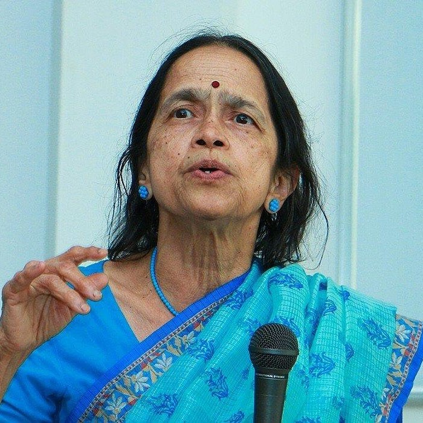
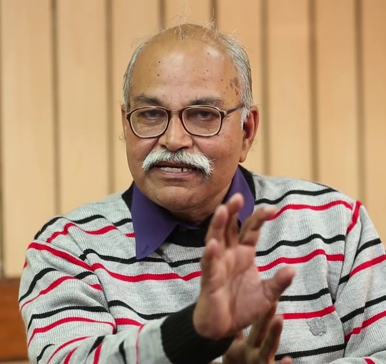
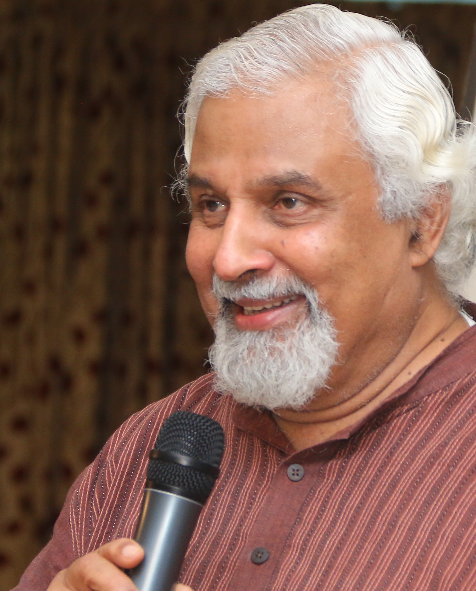

Keynote Speakers

Mangala Narlikar
Mangala Narlikar (Maths Wizard) is an Indian mathematician who has done research in pure mathematics as well as written books for a lay audience.Being wife of Cosmologist Dr. Jayant Narlikar, after sincerely dedicating years to taking care of her family, Dr Mangala got her doctorate in mathematics from University of Bombay 16 years after her marriage. She initially worked at the Tata Institute of Fundamental Research (TIFR) in Mumbai and later worked as a lecturer in the University of Cambridge as well as University of Mumbai and Pune. Meeting details: Time:3rd October : 3PM Link:https://zoom.us/j/94642984554 Zoom Meeting ID: 946 4298 4554
HC Verma
Harish Chandra Verma (Padma shri) is an Indian experimental physicist and professor emeritus of the Indian Institute of Technology Kanpur. He has authored several school, undergraduate and graduate textbooks, the most popular being Concepts of Physics (one of the best books for jee preparation). He popularised physics by creating a link between what students learn with their real lives. Verma has developed more than six hundred ‘low cost’ physics experiments which teachers can employ in their classrooms Meeting details: Time:3rd October : 3PM Link:https://zoom.us/j/95511125553 Zoom Meeting ID: 955 1112 5553Lawrence Maxwell Krauss
Lawrence Maxwell Krauss is an Americantheoretical physicist and cosmologist. He founded ASU's Origins Project, now called ASU Interplanetary Initiative, to investigate fundamental questions about the universe and served as the project's director. Krauss is the author of several bestselling books, including The Physics of Star Trek and A Universe from Nothing , and chaired the Bulletin of the Atomic Scientists Board of Sponsors. Krauss is one of very few to have received awards from all three major American physics societies: the American Physical Society, the American Association of Physics Teachers, and the American Institute of Physics. He is termed as one of the top physicists living currently. Meeting details: Time:2nd October : 8 PM Link:https://zoom.us/j/96073541406 Zoom Meeting ID: 960 7354 1406